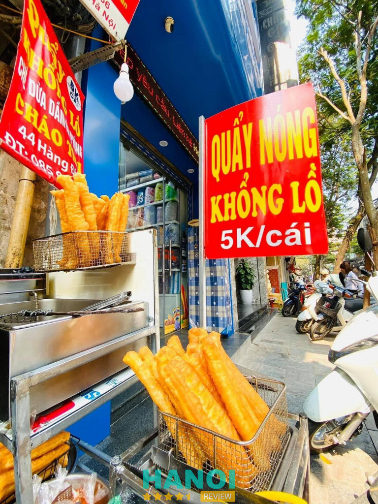
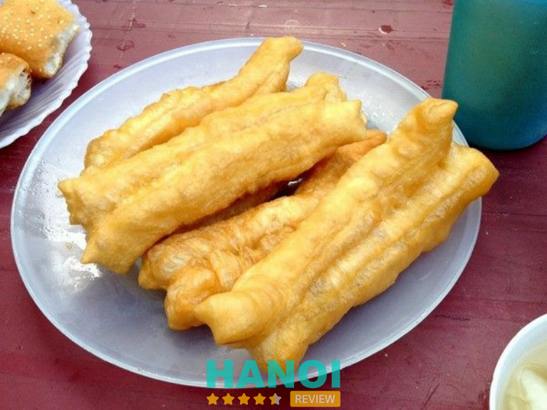
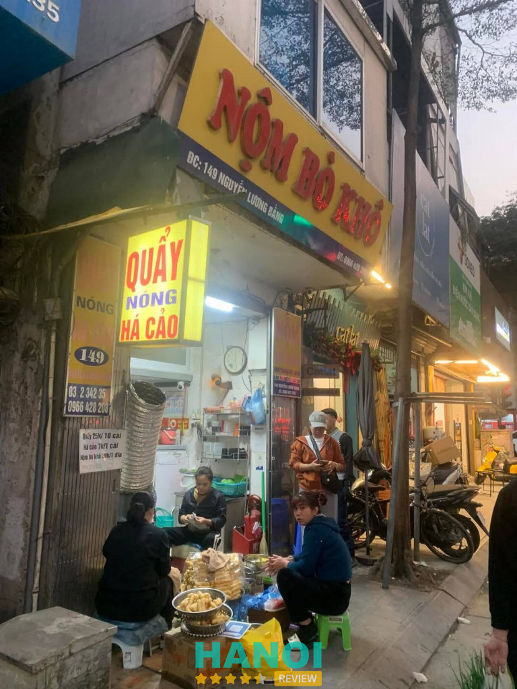
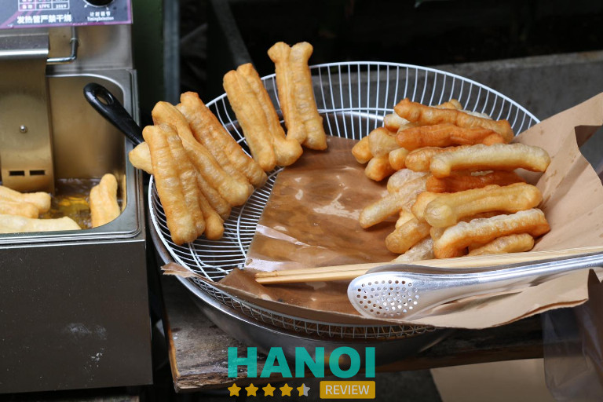
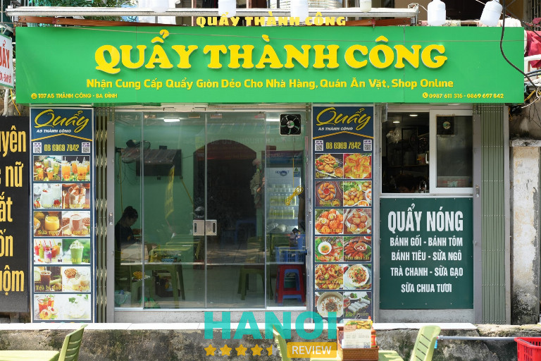
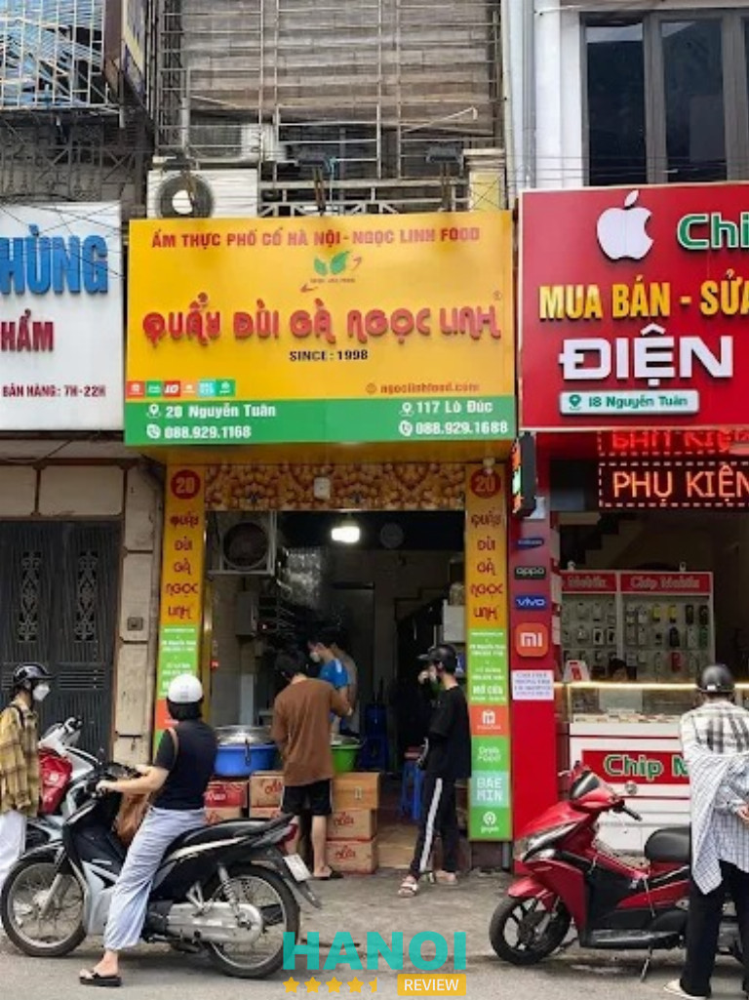
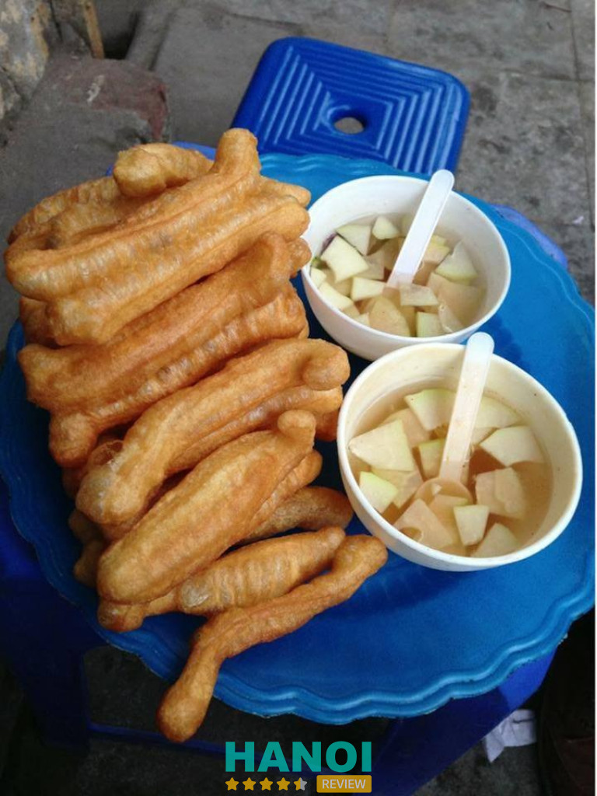
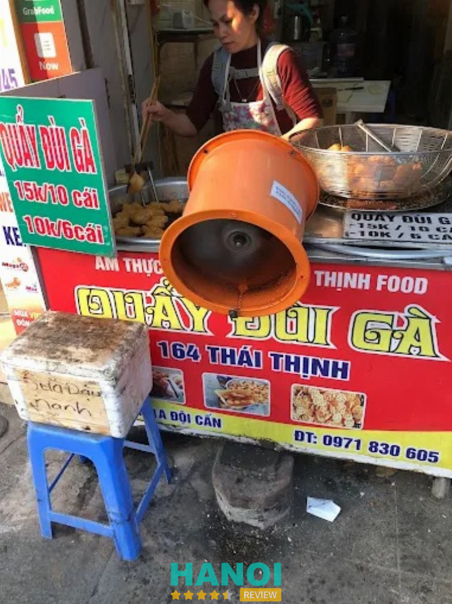
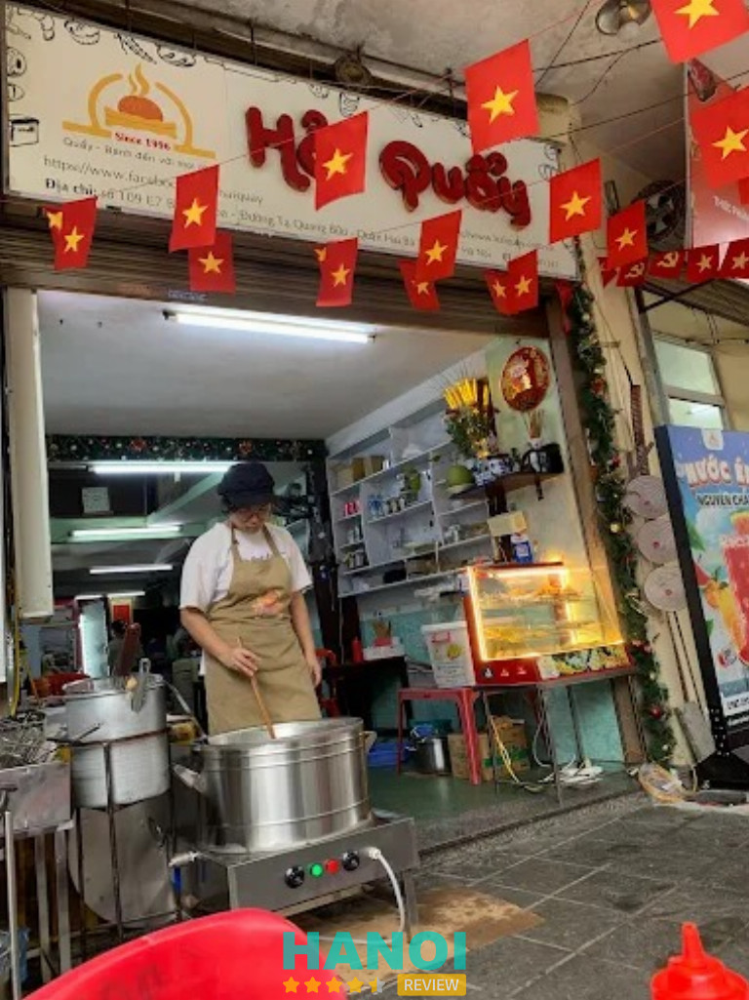

10 Quán quẩy nóng ở Hà Nội giòn tan ăn là mê
Khi tiết trời Hà Nội chuyển mình sang những ngày se lạnh, cảm giác được cầm trên tay những chiếc quẩy vàng ươm, nóng hổi thật khó có gì sánh bằng. Những quán quẩy nóng ở Hà Nội luôn là điểm đến lý tưởng để bạn cùng bạn bè nhâm nhi thức quà vặt giản dị nhưng đầy sức hút này. Hương thơm đặc trưng hòa quyện cùng bát nước chấm chua ngọt tạo nên một trải nghiệm ẩm thực đường phố vô cùng tinh tế và khó quên giữa lòng thủ đô.
Top 10 Quán quẩy nóng tại Hà Nội nên thử một lần
Hương vị truyền thống kết hợp cùng sự khéo léo trong cách chế biến của người thợ tạo nên sức hấp dẫn khó cưỡng. Những địa điểm này không chỉ đơn thuần bán món ăn mà còn lưu giữ cả một nét văn hóa quà chiều đặc trưng của người dân đất Hà Thành suốt bao năm qua.
Quẩy 44 Hàng Điếu – Hoàn Kiếm
- Giờ mở cửa: 11:00 – 19:00
- Giá dao động: 5.000 – 30.000 đồng
Nằm tại một góc nhỏ của Hà Nội, quán quẩy nóng này tuy không có không gian lớn để ngồi lại thoải mái nhưng vẫn luôn thu hút sự quan tâm lớn từ thực khách. Đa số mọi người thường lựa chọn mua mang về để thưởng thức trọn vẹn hương vị đặc trưng trong từng chiếc bánh.

Điểm nổi bật nhất giúp quán ghi điểm chính là kích thước lớn của những chiếc quẩy. Từng miếng bánh được chế biến thủ công tỉ mỉ, chiên giòn đều và phần thịt bánh bên trong rất chắc. Cách làm này giúp bánh giữ được độ mềm mịn, thơm ngon, không bị khô hay gây cảm giác ngán khi ăn.
Sức hấp dẫn của món ăn còn đến từ phần nước chấm độc đáo. Sự kết hợp hài hòa giữa vị chua và vị ngọt tạo nên một tổng thể hoàn hảo, làm tôn lên độ giòn tan của bánh quẩy. Khi hòa quyện cùng nhau, mỗi hạt ngọt chua và cảm giác giòn mịn mang lại một trải nghiệm ẩm thực thú vị.
Thực khách có thể lựa chọn các món quẩy với mức giá cụ thể như sau:
- Quẩy nóng khổng lồ: 6.000 VNĐ/chiếc
- Combo 10 quẩy nóng nhỏ: 30.000 VNĐ
- Combo 5 quẩy nóng khổng lồ: 30.000 VNĐ
- Combo 10 quẩy nóng khổng lồ: 60.000 VNĐ
- Combo 20 quẩy nóng khổng lồ: 110.000 VNĐ
Với những ai đang tìm kiếm hương vị quẩy nóng giòn đúng điệu tại Hà Nội, việc nếm thử những chiếc bánh khổng lồ cùng nước chấm chua ngọt này là một lựa chọn đáng cân nhắc. Hãy liên hệ ngay để đặt mua và thưởng thức những phần quẩy nóng hổi, giòn rụm.
Thông tin liên hệ:
- Địa chỉ: 44 Hàng Điếu, Hoàn Kiếm, Hà Nội
- Điện thoại: 0948 655 688
- Facebook: fb.com/quayhangdieu
Quán Quẩy Nóng Đội Cấn – Ba Đình
- Giờ mở cửa: 10:00 – 18:30
- Giá dao động: 2.000 – 10.000 đồng
Quán quẩy nóng này là một trong những địa chỉ ẩm thực quen thuộc, gắn liền với nét văn hóa ăn quà vặt độc đáo của thủ đô. Trải qua thời gian dài hoạt động, địa điểm này vẫn giữ vững sức hút đối với thực khách nhờ hương vị đặc trưng và phong cách phục vụ bình dân, gần gũi với mọi tầng lớp khách hàng.

Các loại bánh tại đây được chế biến từ nguồn nguyên liệu tươi, thực hiện tỉ mỉ để tạo nên độ thơm ngon riêng biệt cho từng món. Thực đơn của quán tập trung vào những món bánh truyền thống, mang lại sự hài lòng cho người thưởng thức:
- Quẩy nóng: Những chiếc quẩy được chiên sẵn, giữ độ nóng hổi và độ giòn đặc trưng.
- Bánh tiêu: Mang hương vị thơm bùi, là lựa chọn phổ biến cho bữa xế.
- Bánh gối: Có sự kết hợp giữa lớp vỏ giòn và phần nhân được chuẩn bị kỹ lưỡng.
Một điểm thuận tiện tại quán quẩy ngon này chính là dịch vụ mua mang về nhanh chóng. Thực khách có thể lựa chọn các loại bánh yêu thích và nhận ngay những túi bánh nóng hổi để thưởng thức tại nơi khác, giúp tiết kiệm thời gian mà vẫn giữ trọn hương vị.
Sự kết hợp giữa mức giá hợp lý và chất lượng bánh ổn định giúp quán luôn duy trì được lượng khách đông đảo mỗi ngày. Nếu đang tìm kiếm hương vị bánh quẩy đúng chất Hà Nội, đây là điểm đến đáng trải nghiệm để cảm nhận sự tinh tế trong từng loại bánh chiên.
Thông tin liên hệ:
- Địa chỉ: Đối diện 166B Đội Cấn, Ba Đình, Hà Nội
Quán Quẩy Nóng & Há Cảo Đống Đa
- Giờ mở cửa: 14:00 – 20:00
- Giá dao động: 15.000 – 50.000 đồng
Nằm trên con phố Nguyễn Lương Bằng, quán quẩy nóng này là điểm đến quen thuộc cho những ai yêu thích ẩm thực đường phố Hà Nội. Dù không gian khá khiêm tốn và thời gian mở cửa có hạn, nơi đây vẫn thu hút đông đảo thực khách nhờ sự lôi cuốn trong từng món ăn.
Những chiếc bánh quẩy tại quán có hình dáng nhỏ nhắn, tinh tế với màu sắc bắt mắt. Nhờ quy trình chiên trong dầu nóng, quẩy đạt được độ giòn rụm bên ngoài, trong khi phần ruột vẫn giữ được sự mềm mịn và thơm ngon đặc trưng, tạo nên trải nghiệm thú vị cho vị giác.

Bên cạnh quẩy nóng, quán còn mang đến sự lựa chọn đa dạng với các món ăn kèm và thức uống giải nhiệt:
- Quẩy nóng: Giòn tan, thơm nức, luôn được phục vụ khi còn nóng hổi.
- Há cảo: Nhân đa dạng các loại, vỏ mỏng dai, mức giá chỉ 5.000 đồng mỗi chiếc.
- Nộm bò khô: Sự kết hợp hài hòa giữa các nguyên liệu truyền thống.
- Sữa đậu nành: Thức uống thanh mát, cân bằng vị giác sau các món chiên.
- Nước ngọt giải khát: Nhiều loại đa dạng phục vụ nhu cầu khách hàng.
Thực khách muốn thưởng thức hương vị ẩm thực truyền thống có thể trực tiếp ghé thăm địa chỉ tại phố Nguyễn Lương Bằng. Sự kết hợp giữa những chiếc bánh quẩy giòn tan và há cảo thơm ngon với mức giá hấp dẫn biến nơi đây thành điểm dừng chân lý tưởng cho những buổi chiều tụ tập hoặc ăn nhẹ.
Thông tin liên hệ:
- Địa chỉ: 149 Nguyễn Lương Bằng, Đống Đa, Hà Nội
- Điện thoại: 0926 016 172
- Facebook: fb.com/Quaynong149
Quẩy nóng Cầu Gỗ – Hoàn Kiếm
- Giờ mở cửa: 15:30 – 20:00
- Giá dao động: 2.000 – 5.000 đồng
Nằm ngay sát vỉa hè thoáng đãng, kế bên ngôi chùa Kim Cổ cổ kính, quán quẩy nóng này là điểm dừng chân quen thuộc cho những ai yêu thích ẩm thực Hà Nội. Dù sở hữu không gian nhỏ nhắn, quán vẫn thu hút sự chú ý của đông đảo thực khách nhờ sự mộc mạc và hương vị đặc trưng. Tại đây, thực khách có thể quan sát trực tiếp quá trình chiên bánh ngay tại chỗ, giúp mỗi chiếc bánh khi đến tay luôn giữ được độ nóng hổi và vẻ ngoài bắt mắt.

Sự hấp dẫn của món ăn nằm ở lớp vỏ giòn tan đối lập với phần ruột bên trong mềm mịn, tạo nên cảm giác ngon miệng khi thưởng thức. Điểm nhấn không thể thiếu chính là bát nước chấm được pha chế hài hòa, mang đủ vị chua ngọt vừa vặn. Khi kết hợp cùng bánh quẩy hay bánh tiêu, hương vị món ăn trở nên trọn vẹn và đậm đà hơn.
Dù lượng khách ra vào mỗi ngày rất lớn, quán vẫn duy trì mức giá bình dân, phù hợp với mọi đối tượng muốn tìm kiếm một trải nghiệm ẩm thực truyền thống đáng nhớ.
Dưới đây là danh sách các món ăn kèm mức giá cụ thể tại quán:
- Quẩy nóng: 3.000 VNĐ
- Bánh tiêu: 8.000 VNĐ
- Bánh bao chiên: 10.000 VNĐ
- Khoai tây lốc xoáy: 20.000 VNĐ
- Khoai tây lốc xoáy phô mai: 20.000 VNĐ
Mức giá các món ăn tại đây dao động từ 3.000 VNĐ đến 20.000 VNĐ, một mức chi phí rất phổ thông cho một bữa ăn nhẹ giữa lòng phố cổ. Việc lựa chọn thưởng thức quẩy nóng trong không gian vỉa hè mang lại cảm giác gần gũi và chân thực. Những thực khách đang tìm kiếm một địa chỉ ăn vặt chuẩn vị với giá cả hợp lý có thể ghé trực tiếp địa chỉ tại Đường Thành để thưởng thức và cảm nhận rõ nét hơn về món ăn này.
Thông tin liên hệ:
- Địa chỉ: 1 Hàng Đậu, Hàng Bạc, Hoàn Kiếm Hà Nội
- Điện thoại: 0904 148 822
- Facebook: fb.com/100067896288702
Quẩy Thành Công – Ba Đình
- Giờ mở cửa: 08:00 – 19:00
- Giá dao động: 20.000 – 50.000 đồng
Quẩy Thành Công Quán, hay còn được biết đến với cái tên gần gũi “quẩy cô Nga”, là địa chỉ dừng chân thú vị cho những ai yêu thích ẩm thực đường phố Hà Nội. Thay vì những chiếc quẩy kích thước lớn thông thường, món quẩy tại đây gây ấn tượng bởi kích cỡ nhỏ nhắn, chỉ dài bằng một ngón tay. Đặc điểm này giúp việc thưởng thức trở nên dễ dàng và mang lại cảm giác lạ miệng cho thực khách.

Những chiếc quẩy nóng hổi vừa ra lò sở hữu lớp vỏ vàng ươm, giòn rụm bao bọc lấy phần ruột bên trong thơm nhẹ, xốp và có độ ngọt thanh tự nhiên. Mỗi miếng ăn là sự hòa quyện giữa độ giòn tan và sự mềm mại, tạo nên sức hút riêng biệt cho món ăn dân dã này. Sự hiếu khách và phong cách phục vụ thân thiện từ phía quán cũng là yếu tố tạo nên không gian thoải mái, gần gũi cho mỗi lượt khách ghé thăm.
Bên cạnh món chủ đạo là quẩy nóng, thực đơn tại quán còn mang đến sự lựa chọn đa dạng với nhiều hương vị khác nhau:
- Bánh gối và bánh bao chiên: Nhân bánh đậm đà, vỏ bánh chiên vàng đều.
- Bánh tiêu: Món bánh truyền thống với hương mè thơm bùi.
- Nem chua rán: Lớp vỏ giòn xù, là món ăn kèm lý tưởng.
- Các loại đồ uống giải khát: Trà chanh, trà sữa, sữa chua.
- Thức uống dinh dưỡng: Sữa ngô và sữa đậu nành nóng hoặc đá.
- Các món chiên rán ăn vặt khác: Phục vụ đa dạng sở thích của thực khách.
Mức giá tại quán nhìn chung khá bình dân, phù hợp cho các buổi tụ tập ăn nhẹ hoặc mua mang đi. Các món ăn và đồ uống được kết hợp linh hoạt, đáp ứng nhu cầu ăn vặt đa dạng của nhiều đối tượng khách hàng. Nếu đang tìm kiếm một địa chỉ để thưởng thức quán quẩy nóng ở Hà Nội với hương vị đặc trưng và không gian thân mật, đây là một gợi ý đáng để trải nghiệm.
Thông tin liên hệ:
- Địa chỉ: 107 A5 Thành Công, Ba Đình, Hà Nội
- Điện thoại: 0869 697 842
- Facebook: fb.com/100064192716529
Quẩy đùi gà Ngọc Linh – Thanh Xuân
- Giờ mở cửa: 06:30 – 21:00
- Giá dao động: 10.000 – 50.000 đồng
Quẩy đùi gà Ngọc Linh được biết đến là quán quẩy nóng ở Hà Nội thường xuyên đông đúc với lượng khách ra vào liên tục. Trước quán luôn xuất hiện hàng dài người chờ mua, trong đó có rất nhiều shipper nhận đơn mang đi. Không khí nhộn nhịp cùng mùi quẩy chiên thơm lan tỏa tạo nên hình ảnh quen thuộc của địa điểm ăn vặt được nhiều người tìm đến.

Tại quán quẩy nóng ở Hà Nội này, nhân viên liên tục chiên quẩy trong ba chiếc chảo dầu lớn đặt ngay khu vực chế biến. Công việc diễn ra liên tục để kịp phục vụ số lượng khách đông mỗi ngày. Những chiếc quẩy được chiên vàng đều, nóng hổi và đưa ra quầy ngay khi vừa vớt khỏi chảo.
Quẩy đùi gà tại Ngọc Linh có kích thước lớn, phần ruột nhiều và nở xốp. Khi thưởng thức, lớp vỏ giòn nhẹ bên ngoài kết hợp với phần ruột dai mềm tạo cảm giác ăn khá thú vị. Mỗi chiếc quẩy còn được rắc thêm hạt vừng, mang lại vị bùi nhẹ và mùi thơm đặc trưng. Nhờ vậy, hương vị quẩy tại quán quẩy nóng ở Hà Nội này được nhiều người nhớ đến khi nhắc tới các món ăn vặt quen thuộc của Hà Thành.
Menu tại quán được bán với nhiều lựa chọn khác nhau:
- Quẩy đùi gà (túi 10 cái): 17.000 VNĐ
- Quẩy đùi gà (túi 50 cái): 85.000 VNĐ
- Quẩy đùi gà (túi 100 cái): 165.000 VNĐ
- Sữa đậu nành lạnh: 15.000 VNĐ
- Sữa chua: 10.000 VNĐ
Ngoài quẩy đùi gà nóng, thực khách thường chọn thêm sữa đậu nành hoặc sữa chua để dùng kèm. Sự kết hợp giữa quẩy nóng giòn và đồ uống mát giúp bữa ăn vặt trở nên tròn vị hơn. Quầy bán hoạt động nhộn nhịp vào nhiều thời điểm trong ngày, đặc biệt khi lượng đơn mang đi tăng cao.
Quẩy đùi gà Ngọc Linh là địa điểm được nhiều người tìm kiếm khi muốn thưởng thức quán quẩy nóng ở Hà Nội với phong cách bán hàng nhanh, quẩy chiên liên tục và menu đơn giản, dễ lựa chọn.
Thông tin liên hệ:
- Địa chỉ: 20 Nguyễn Tuân, Thanh Xuân Trung, Thanh Xuân, Hà Nội
- Điện thoại: 0889 291 168
Quẩy nóng Hàng Bông – Hoàn Kiếm
- Giờ mở cửa: 17:00 – 21:30
- Giá dao động: 10.000 – 25.000 đồng
Quẩy nóng Hàng Bông là cái tên gợi nhắc ngay đến hương vị thơm ngon của những miếng quẩy phục vụ lúc còn nóng hổi. Đây là điểm đến cho những tín đồ ẩm thực đang tìm kiếm một món ăn vặt truyền thống đúng điệu. Một trong những điểm thu hút của quán quẩy nóng ở Hà Nội này chính là chất lượng trong từng miếng quẩy được mang đến cho thực khách.

Sự khác biệt của món ăn tại đây nằm ở quy trình chế biến và cảm nhận trực tiếp khi thưởng thức. Dưới đây là những chi tiết khiến món quẩy này trở nên đặc trưng:
- Miếng quẩy luôn được chiên tới lúc nóng hổi, giữ được sự nguyên bản của bột mới.
- Quẩy đạt độ giòn tan lớp vỏ ngoài nhưng vẫn giữ được độ mềm dai bên trong.
- Vị đậm đà đặc trưng, thơm ngon và không gây cảm giác ngán khi ăn nhiều.
- Món ăn dễ ăn, dễ làm no bụng, tạo sự cân đối tốt giữa chất lượng và cảm nhận vị giác.
Quán quẩy nóng ở Hà Nội trên phố Hàng Bông đã ghi dấu ấn nhờ việc duy trì hương vị đặc trưng khó tìm thấy ở nơi khác. Những miếng quẩy giòn tan, nóng hổi kết hợp cùng sự tỉ mỉ trong cách chiên bánh tạo nên một tổng thể hài hòa. Với những ai có nhu cầu tìm kiếm một món ăn nhẹ vừa mang nét truyền thống, vừa thỏa mãn tiêu chí ngon miệng, Quẩy nóng Hàng Bông là lựa chọn đáng cân nhắc để liên hệ và thưởng thức ngay.
Thông tin liên hệ:
- Địa chỉ: 73 Hàng Bông, Hoàn Kiếm, Hà Nội
Quẩy Đùi Gà – Hoàn Kiếm
- Giờ mở cửa: Mở cả ngày
- Giá dao động: 8.000 – 50.000 đồng
Quán quẩy nóng Hà Nội với món quẩy đùi gà là một địa chỉ ẩm thực thú vị, mang đến trải nghiệm khác biệt so với các loại quẩy truyền thống. Với hình dáng nhỏ nhắn gợi liên tưởng đến những chiếc đùi gà tí hon, món ăn này nhanh chóng thu hút sự chú ý của những tín đồ yêu thích ăn vặt tại khu vực Hoàn Kiếm và phố Thái Thịnh.

Sự khác biệt của món ăn nằm ở cả hình thức lẫn hương vị, tạo nên sự lôi cuốn riêng biệt:
- Hình dáng độc đáo: Miếng quẩy nhỏ nhắn, xinh xắn, tạo cảm giác thú vị và giòn rụm khi cầm trên tay.
- Hương vị hài hòa: Khi thưởng thức, thực khách cảm nhận được độ mềm mịn bên trong cùng vị ngọt tự nhiên từ tinh bột hòa quyện với vị thịt gà.
- Trải nghiệm ẩm thực: Món ăn không gây cảm giác ngấy hay quá mỡ, cho phép thưởng thức nhiều miếng cùng lúc mà không thấy chán.
- Lớp vỏ hấp dẫn: Vỏ ngoài phủ một lớp mè mỏng mịn, có màu nâu caramen bắt mắt cùng hương thơm thoang thoảng đặc trưng.
Quán quẩy nóng tại Hà Nội này duy trì việc chế biến và bán hàng liên tục từ sáng sớm cho đến tận đêm khuya. Điều này mang lại sự thuận tiện cho những ai muốn thay đổi khẩu vị cho bữa sáng hoặc tìm kiếm một món ăn nhẹ nóng hổi vào buổi tối.
Với lớp vỏ mè giòn thơm và phần nhân mềm mại, quẩy đùi gà tại phố Thái Thịnh là lựa chọn phù hợp cho một món ăn vặt nóng hổi, đáp ứng nhu cầu ẩm thực đa dạng của người dân và du khách.
Thông tin liên hệ:
- Địa chỉ: 164 P. Thái Thịnh, Láng Hạ, Hoàn Kiếm, Hà Nội
- Điện thoại: 0989 967 964
Hải Quẩy – Hai Bà Trưng
- Giờ mở cửa: 7:00 – 22:00
- Giá giao động: 40.000 – 155.000 đồng
Hải Quẩy sở hữu không gian rộng rãi cùng phong cách phục vụ chuyên nghiệp, tạo nên một địa điểm thưởng thức ẩm thực thoải mái. Điểm khác biệt lớn nhất nằm ở những miếng quẩy có kích thước nhỏ nhắn, mang đến cảm giác tinh tế và phá cách so với dòng quẩy truyền thống. Kích thước vừa vặn này giúp việc thưởng thức trở nên dễ dàng, gọn gàng mà vẫn giữ nguyên độ hấp dẫn đặc trưng của món ăn.

Bên cạnh đặc sản quẩy nóng, thực đơn tại đây còn mở rộng với nhiều lựa chọn phong phú như bánh bao chiên có lớp vỏ giòn tan, dậy mùi thơm. Sự kết hợp giữa các món quen thuộc và lạ miệng biến nơi đây thành không gian lý tưởng để khám phá những hương vị ăn vặt thú vị.
Các lựa chọn ẩm thực đặc sắc tại Hải Quẩy bao gồm:
- Quẩy nóng (10 cái): 40.000 VNĐ
- Combo quẩy, bánh: 70.000 VNĐ
- Combo nem thượng hạng: 45.000 VNĐ
- Combo 5 gỏi + 5 cuốn: 120.000 VNĐ
- Combo 5 gỏi + nộm: 45.000 VNĐ
Đây là tọa độ phù hợp cho những ai tìm kiếm sự mới mẻ trong các món ăn vặt quen thuộc của Hà Nội. Khách hàng có nhu cầu thưởng thức các combo hấp dẫn hoặc quẩy nóng giòn có thể liên hệ trực tiếp với quán để được phục vụ nhanh chóng.
Thông tin liên hệ:
- Địa chỉ: Số 109E7 Tạ Quang Bửu, P. Bách Khoa, Q. Hai Bà Trưng, Hà Nội
- Điện thoại: 024 3868 1341
- Facebook: fb.com/61551171285637
Quẩy Béo – Cầu Giấy
- Giờ mở cửa: 07:00 – 22:00
- Giá dao động: 10.000 – 20.000 đồng
Cái tên Quẩy Béo từ lâu đã gắn liền với sự ấn tượng về những miếng quẩy giòn ngon và thơm nức đặc trưng. Mỗi phần ăn tại đây không đơn thuần là món ăn vặt thông thường mà mang đến một trải nghiệm hương vị đầy hấp dẫn cho thực khách.
Điểm nhấn đáng chú ý tại quán quẩy nóng ở Hà Nội này chính là những chiếc bánh bao chiên nhỏ, giòn rụm với mức giá chỉ 5.000 đồng. Đây là lựa chọn lý tưởng cho những ai yêu thích cảm giác giòn tan của lớp vỏ bánh. Bên cạnh món quẩy truyền thống, thực đơn còn được mở rộng với nhiều loại đồ uống đi kèm như sữa ngô, sữa chua hay chè đắng. Mức giá tại quán dao động từ 10.000 đến 20.000 đồng, khá phù hợp với túi tiền của học sinh, sinh viên.
Ngoài quẩy nóng, thực khách có thể tìm thấy nhiều lựa chọn phong phú khác trong danh sách món ăn của quán:
- Quẩy dẻo chiên sơ: Giữ được độ mềm dai bên trong.
- Set quẩy khủng: Dành cho nhóm đông người hoặc những ai muốn ăn thỏa thích.
- Bánh bao nhân thịt xá xíu chiên: Vỏ giòn, nhân thịt đậm đà.
- Bánh bao nhân thịt xá xíu không chiên: Lớp vỏ mềm mại, truyền thống.
- Quẩy béo: Những miếng quẩy to, thơm ngậy.
- Trà chanh: Đồ uống giải nhiệt, cân bằng vị giác.
Việc đa dạng hóa các món ăn và đồ uống đi kèm cho thấy sự chú trọng vào nhu cầu thực tế và khả năng tài chính của khách hàng. Những ai đang tìm kiếm hương vị quẩy nóng chuẩn xác có thể ghé thăm để trực tiếp cảm nhận độ giòn và thơm của từng món ăn.
Thông tin liên hệ:
- Địa chỉ: 431 Nguyễn Khang, Yên Hoà, Cầu Giấy, Hà Nội
Tiêu chí chọn quán quẩy nóng ở Hà Nội
Việc lựa chọn được địa điểm ăn uống ưng ý đòi hỏi bạn phải quan tâm đến nhiều yếu tố để đảm bảo có được một bữa ăn trọn vị nhất.
- Chất lượng bột: Bột bánh phải được nhào nặn kỹ lưỡng để khi chiên lên quẩy có độ nở đều, bên ngoài giòn rụm nhưng bên trong vẫn giữ độ mềm.
- Độ tươi mới: Những chiếc quẩy chỉ thực sự ngon khi được chiên trực tiếp tại chỗ, phục vụ ngay khi còn nóng hổi để thực khách tận hưởng trọn vẹn.
- Nước chấm ngon: Bát nước chấm phải có sự cân bằng giữa vị mặn của mắm, chua của giấm, ngọt của đường và chút cay nồng của ớt tươi xay.
- Vệ sinh thực phẩm: Dầu chiên cần được thay mới thường xuyên để đảm bảo sức khỏe cho người dùng và giúp quẩy có màu vàng óng, không bị cháy khét.
- Giá cả hợp lý: Một địa chỉ đáng tin cậy thường có mức giá bình dân, phù hợp với túi tiền của học sinh, sinh viên và những người yêu ẩm thực.
- Không gian quán: Dù là quán vỉa hè hay trong nhà, sự sạch sẽ và gọn gàng luôn là điểm cộng lớn giúp thực khách cảm thấy thoải mái khi ăn.
- Thái độ phục vụ: Sự niềm nở và nhanh nhẹn của chủ quán giúp khách hàng không phải chờ đợi lâu, tạo nên ấn tượng tốt đẹp ngay từ lần đầu tiên.
Danh sách các quán quẩy nóng ở Hà Nội thường mang đến trải nghiệm ẩm thực giản dị nhưng hấp dẫn với hương thơm đặc trưng và lớp vỏ giòn nóng. Khi lựa chọn địa điểm phù hợp, thực khách có thể thưởng thức quẩy cùng nhiều món ăn quen thuộc như cháo hoặc phở. Việc tìm hiểu trước các quán quẩy nóng ở Hà Nội giúp dễ dàng chọn nơi phù hợp cho bữa sáng hoặc bữa ăn nhẹ trong ngày.
Có thể bạn quan tâm
- 11 Quán ăn vặt ở Hà Nội phải thử ngay, ngon khó cưỡng
- 10 Quán cơm ngon tại Phố Cổ Hà Nội đặc trưng vị truyền thống
- 6 Địa chỉ mua ô mai tại Hà Nội ngon, chuẩn, truyền thống lâu đời
- 15 Quán Cafe Phố Cổ nhất định phải thử khi đến Hà Nội
DOANH NGHIỆP: Đăng tải thông tin MIỄN PHÍ.
Tin đọc nhiều


10 Quán ăn đêm khu vực Phố cổ Hà Nội ngon nổi tiếng nhất
Khắp các con phố của Hà Nội, đặc biệt là tại Phố cổ, có vô số quán ăn đêm với các món ngon đang chờ...

10 Quán bún cá ngon nổi tiếng tại Hà Nội lâu đời nhất
Các quán bún cá ngon nổi tiếng tại Hà Nội lâu đời vẫn luôn có sức hút đặc biệt trong lòng thực khách. Mỗi quán...

8 Quán nướng ngon tại Phố cổ Hà Nội đông khách nhất
Những năm trở lại đây, các quán nướng ngon ở Phố cổ Hà Nội lúc nào cũng đông nghịt khách, đặc biệt là các bạn...

Trở thành người đầu tiên bình luận cho bài viết này!